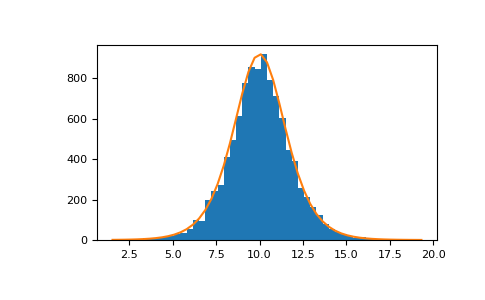

numpy.random.Generator.logistic¶
method
-
Generator.logistic(loc=0.0, scale=1.0, size=None)¶ Draw samples from a logistic distribution.
Samples are drawn from a logistic distribution with specified parameters, loc (location or mean, also median), and scale (>0).
- Parameters
- locfloat or array_like of floats, optional
Parameter of the distribution. Default is 0.
- scalefloat or array_like of floats, optional
Parameter of the distribution. Must be non-negative. Default is 1.
- sizeint or tuple of ints, optional
Output shape. If the given shape is, e.g.,
(m, n, k), thenm * n * ksamples are drawn. If size isNone(default), a single value is returned iflocandscaleare both scalars. Otherwise,np.broadcast(loc, scale).sizesamples are drawn.
- Returns
- outndarray or scalar
Drawn samples from the parameterized logistic distribution.
See also
scipy.stats.logisticprobability density function, distribution or cumulative density function, etc.
Notes
The probability density for the Logistic distribution is
where
 = location and = scale.
= location and = scale.The Logistic distribution is used in Extreme Value problems where it can act as a mixture of Gumbel distributions, in Epidemiology, and by the World Chess Federation (FIDE) where it is used in the Elo ranking system, assuming the performance of each player is a logistically distributed random variable.
References
- 1
Reiss, R.-D. and Thomas M. (2001), “Statistical Analysis of Extreme Values, from Insurance, Finance, Hydrology and Other Fields,” Birkhauser Verlag, Basel, pp 132-133.
- 2
Weisstein, Eric W. “Logistic Distribution.” From MathWorld–A Wolfram Web Resource. http://mathworld.wolfram.com/LogisticDistribution.html
- 3
Wikipedia, “Logistic-distribution”, https://en.wikipedia.org/wiki/Logistic_distribution
Examples
Draw samples from the distribution:
>>> loc, scale = 10, 1 >>> s = np.random.default_rng().logistic(loc, scale, 10000) >>> import matplotlib.pyplot as plt >>> count, bins, ignored = plt.hist(s, bins=50)
# plot against distribution
>>> def logist(x, loc, scale): ... return np.exp((loc-x)/scale)/(scale*(1+np.exp((loc-x)/scale))**2) >>> lgst_val = logist(bins, loc, scale) >>> plt.plot(bins, lgst_val * count.max() / lgst_val.max()) >>> plt.show()
